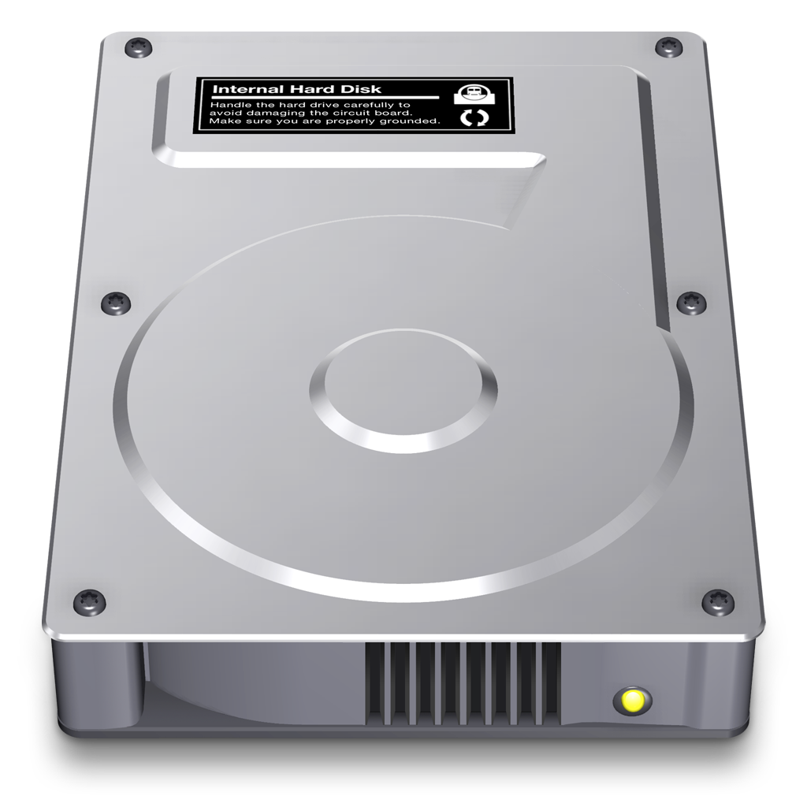
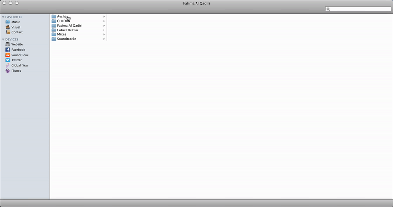

Fatima Al Quadiri
↓
The homepage for the artist Fatima Al Quadiri loads up and I am immediately greeted with the backdrop of her latest album cover and
the instantly recognisable macOS icon that represents the computer hard drive folder.

I click on the hard drive as I would on my own computer and another familiar interface appears, the macOS finder window.
The aesthetics of this window differs to my own finder as it appears to reference an older version of macOS.
Down the navigation panel to the side, I can see menus that reference their MacOS counterparts but with the contents adjusted to represent the various components of Fatima’s online profile.
As I click on the various icons and folders, there is a sense of intuitive anticipation that carries me through the experience. Each icon opens folder columns that reveal the body of her work.

The external online profiles are considered to be ‘devices’ in the finder menu which is a nice reference to the external locations we connect to our computers.
Within two minutes, I can understand the entire layout of the website and where to find what I desire.
The use of macOS as a way of communicating information hierarchy was to me an amusing and yet ingenious way of building a profile. It’s almost difficult to notice how you are using the website due to it being such a ubiquitous design.
Being a website built to organise a profile, I found myself spending most of my time systematically going through each folder to almost let myself catalogue Fatima’s archive of work. In a way, the experience I felt myself most drawn to was simply understanding how much content was contained within these ‘folders’
Clicking on the folders became the most frequent interaction for most of the experience. Other than the external profiles, there was no hyperlinks to take me to seperate pages and the content for each sub folder could be contained within the finder window.
While it might be quite obvious, the decision to create an online profile based on the most recognisable operating system in the world is quite an ingenious one.
It relieves some of the pressure to create an interface structure that has an accessible and functional design and instead takes an interface that almost every user is familiar with on some level.
If the goal was to create a clear system of navigation, then the developer succeeded. On a deeper level, the choice to use an older version of macOS shows a level whimsical self awareness.
You could reference ‘normcore’ as an appropriate identification of the aesthetic choice. To use an up to date version of the MacOS finder window could actually be confusing for a user, leading them to believe their Finder window had opened unexpectedly.
This is a key element to the aesthetic choice of this experience. When we use a nostalgic lens to reflect on this interface design, we can see that the creator is not only trying to create a structural familiarity, but a cultural one as well.
Operating Systems are deeply intertwined within our technological heritage and therefor imbues us with a sense of place within our generation. Using a finder window of such an outdated aesthetic evokes a feeling of comfort, as if to transport us back to a moment in time perhaps where technology was simpler to navigate.
To use this technique could be argued has the goal of being quite literally “user friendly” to feel as welcoming as an old friend.
As is with the utility of the macOS finder, an experience can be as brief or extensive as desired, but will always be efficient.
This can be found in how immediately various pieces of work can be pulled up.
From landing on the page to exploring an album or artwork, I would need no longer than 30 seconds to a minute to become acquainted.
Perhaps as our online identities are disseminated through various social formats, a webpage that tries to emulate this would be redundant.
Therefor it seems logical to make the purpose of such a webpage function more as a directory than as a platform.
Experiences on the various external social platforms would have much deeper engagement but one could always orientate themselves through the use of the webpage.
While I’ve reflected on some of the goals of the experience, more can be revealed by assessing what metaphors the page makes use of and why. If we are arriving on what we could call Fatima’s desktop, it could be argued that using the metaphor of a personal computer allows us to feel an affinity with Fatima. Being privy to such a personal digital space could elicit the same emotions we feel when being invited into someone’s home. At first it feels unique and unfamiliar, but as we adjust, we start to recognise the personality contained with in a space that we all possess in our own form. I see this metaphor as a way to welcome the user in and make them feel at home.
Of course such a utilitarian design choice is not without its flaws. For the same reasons I mentioned before about familiarity and acknowledgment of external platforms, websites have had to evolve into more dynamic spaces that can offer what platforms can’t. This interface choice is the visual equivalent of wearing tracksuit pants. You are technically dressed and can leave the house, but there has been no consideration given to who you will interact with or the environments you will pass through. For example, there is no consideration given what the experience will feel like on a mobile device, an interface that the majority of users will visit the page from. Also, given Fatima Al Quadiri’s exquisite and eclectic style, the lack of expression seems curiously contradictory. From the webpage alone, you would have no sense of her sophisticated, genre bending, abstract style. Perhaps this type of interface is another element of her subversive practice, to challenge what we expect to see.
Despite the lack of flair and personal expression, I do still enjoy this interaction experience for its brazen simplicity and functional execution. Trying to gather information on an artist with so many platforms available can be overwhelming these days and sometimes you just want information to delivered to you in a direct manner. Wikipedia looks the way it does for this very reason. Fatima’s expression comes from her work and so having a website that rejects the notion that the homepage is a necessary extension of that is refreshing. As I have discussed, the page is friendly, it’s amusing and it’s incredibly intuitive to navigate, thus making the experience, no matter how mundane, a very satisfying one. Perhaps we should all aspire to employ a healthy level of sardonic simplicity in our platforms.